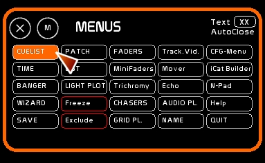

Table des matières
Le Séquentiel (CueList)
Accéder au séquenciel:
Clicker [CueList] ou taper [F9]

Définition
- le séquentiel est un gestionnaire de mémoires
- les états lumineux sont enregistrés dans des mémoires
- ces mémoires sont enregistrables avec une appellation numérique ( mémoire 1, mémoire 125, mémoire 999)
- elles vont de la mémoire 0 à la mémoire 999.9
- leur ordre de rangement est automatiquement dans un ordre croissant
- elles possèdent entre chaque unité 9 mémoires d'insert, “des mémoires point”: .1 .2 .3 .4 … jusqu'à .9
- à ces mémoires ont affecte un temps de fondu de l'une à l'autre. Ce fondu s'appelle un crossfade ou encore transfert.
- ce passage d'une mémoire à l'autre peut se faire de plusieurs manières:
- à la main, via la souris ou une interface midi avec des potentiomètres
- au lancement d'un Go qui lancera le crossfade sur la base de temps enregistrée
- ce séquenciel est en parallèle de l'activité circuits des faders.
- lorsque l'on manipule des circuits par sélection et montée de niveau à la souris ou aux flèches, on intervient sur la mémoire sur scène.
- lorsque l'on manipule des circuits par sélection et montée de niveau à la souris ou aux flèches dans le BLIND, on intervient sur le preset, la mémoire à venir.
- entre les circuits de type HTP, dont les niveaux sont contrôlés par le séquenciel ( affichage en bleu ) et ceux dont les niveaux sont contrôlés par les faders ( affichage en orange), le niveau le plus haut est pris en compte et envoyé à l'interface dmx.
Pour accéder au séquentiel: clicker [SEQUENCES] ou taper [F9]
Présentation de l'interface du Séquentiel

1- l'espace des mémoires, où sont affichés, de haut en bas:
- la mémoire précédant la mémoire sur scène
- la mémoire sur scène, sur fond bleu
- la mémoire en preset / blind, sur fond rouge
- 6 autres mémoires après la mémoire en preset
Ces mémoires sont affichées, de gauche à droite:
- avec le temps de delay et le temps de crossfade
- le numéro de la mémoire
- si elle est linkée ou non. Le link apparait avec une flèche.
- si une automation est intégrée ( Banger), avec l'affichage du numéro de cette automation
- le descriptif de la mémoire
2- l'espace du crossfade:
- le master de la mémoire sur scène en bleu
- le master de la mémoire en preset en rouge
- le bouton de ratio pour un crossfade manuel
3- l'espace du Go:
- les trois bouttons de Go: Go Back, Go, et DoubleGo
- l'accéléromètre du crossfade
4- l'espace des manipulations: création / destruction de mémoire, et navigation rapide sur scène ou en preset
Manipulations de base
Création de mémoire
- Créer son état lumineux, sur scène ou en preset
- Taper son numéro de mémoire ( par ex. 27.5)
- Clicker [NEW] ou taper [CTRL][F1]
! Surveillez le retour d'infos.
Destruction de mémoire
- Taper son numéro de mémoire ( par ex. 27.5)
- Clicker [DEL] ou taper [SHIFT][DEL]
v.0.8.2.2: Si aucun chiffre n'est tapé, le fait d'être en Blind ou pas défini la position sur scène ou en preset comme la mémoire à détruire.
! [DEL] est [SUPR] en clavier français
Ré-enregistrement de mémoire
Ré-enregistrement sur scène ou en preset
Le ré-enregistrement de la mémoire comprend tous les circuits présents sur scène, ou en preset si vous êtes en mode Blind.
- Modifier l'état lumineux sur scène ou en preset
- à la souris:
- enclencher le mode STORE ( clicker [STORE] ou taper [F1]
- clicker le numéro de mémoire où enregistrer cet état lumineux

- au clavier : taper [CTRL][F1] pour ré-enregistrer la mémoire sur scène ou en preset ( si vous êtes en mode Blind)
Ré-enregistrement d'une autre mémoire que celle en preset ou en scène
- Taper le numéro de mémoire
- taper [SHIFT][F1] pour ré-enregistrer cette mémoire à la volée.
Modification sélective d'une mémoire
On peut être amené à devoir enregistrer juste l'état d'un ou plusieurs circuits.
Par ex. en cours de spectacle on se rend compte que sur les 3 mémoires suivantes le circuit 65 est trop fort de 20 points.
Plutôt que de naviguer dans les mémoires et les ré-enregistrer par une suite de manipulations, il faut:
- sélectionner le ou les circuits à l'intensité voulue
- enclencher le mode [MODIFY] en clickant [MODIFY] ou en tapant [F2]
- clicker la mémoire à modifier
- répéter les étapes 1 2 et 3 pour les mémoires suivantes
Enregistrement d'une mémoire conjuguant Faders et niveaux
Une mémoire peut être enregistrée en prenant en compte la sortie des Faders, et celle du séquentiel.
A la souris dans la fenêtre séquenciel:
- enclencher le mode [REPORT] en clickant [REPORT] ou en tapant [F3]
- clicker la mémoire à modifier
! Si vous êtes en position Blind, les Faders ne seront pas descendus.
En raccourcis clavier ( manipulation que sur scène):
- création de mémoire:
- taper le numéro de mémoire à créer
- presser [SHIFT][F3]
- confirmer
- modification de mémoire ( uniquement la mémoire sur scène )
- presser [SHIFT][F3]
- confirmer
Copier rapidement une mémoire vers une autre
version 0.8.2.2, en utilisant [CTRL][C] et [CTRL][V]
Sont copiés: les circuits, le descriptif, l'annotation, les temps, le link, le banger enchassé dans la mémoire.
Si l'entrée numérique contient des chiffres ( ici 32 ), ceux-ci sont considérés comme une mémoire à appeler, et non plus des circuits à copier:

- taper numéro de mémoire à copier ( ici 25 )
- [CTRL][C] ( noter en retour d'infos que Mem.To Copy affiche la mémoire à copier)
- taper numéro de mémoire à créer ou remplacer ( ici 32 )
- [CTRL][V]
- confirmer
Navigation rapide, CUT
La navigation rapide permet de se déplacer sans crossfade dans la conduite.
On peut donc se déplacer directement sur scène:
- à la souris, en clickant [Stage -] ou [Stage +]
- au clavier, en tapant [CTRL][W] ou [CTRL][X]
Le séquenciel sera rafraichi.
Ou se déplacer dans les mémoires du preset, sans toucher la mémoire sur scène:
- à la souris, en clickant [Preset -] ou [Preset +]
- au clavier, en tapant [SHIFT][W] ou [SHIFT][X]
GOTO: Charger une mémoire appelée au clavier
Charger à la souris:
- Taper au clavier le numéro de mémoire et le charger en clickant:
- soit dans le numéro de mémoire sur scène
- soit dans le numéro de mémoire en preset
Cette manipulation est possible en cours de crossfade, ou en pause. Le renvoi du Go prendra en compte les temps de cette mémoire.
Cette manipulation n'est pas possible sur scène.
L'envoi de la mémoire 0.0 est possible dans la mémoire en preset, absolument pas sur scène.
Charger via le bouton GOTO:
En utilisant le bouton [GOTO] vous chargez uniquement le numéro de mémoire dans le preset.
* Taper au clavier * Clicker le bouton [GOTO] ( ou utilisez le midi)
Affectation de temps
L'affectation des temps se fait toujours dans la logique de la mémoire en preset. En effet, la mémoire en preset comprent le temps de sortie de la mémoire sur scène, et son temps d'entrée à elle. Il faut donc penser Preset.
Affecter un temps est donc affecter le temps d'entrée de la mémoire que l'on a choisi, et le temps de sortie de la mémoire qui précèdera notre mémoire, quelque qu'elle soit.
L'affectation de temps peut se faire différemment
- si on affecte les temps d'une mémoire sur scène ou en preset
- ou si l'on affecte les autres mémoires affichées
Changer les temps d'une mémoire sur scène ou en preset

Si l'on désire affecter les temps:
- d'un crossfade à venir, on affectera le temps de la mémoire en preset ( en rouge)
- du dernier crossfade effectué, on affectera le temps de la mémoire sur scène ( en bleu)
Cette modification des temps peut se faire de deux manières:
- en utilisant la fenêtre Time, et en clickant en mode [AFFECT] le numéro de mémoire en preset ou sur scène à affecter
- en tapant directement son temps au clavier, comme vu dans les conventions ( 1..23. par ex.), et en clickant le chiffre du temps IN OUT ou Delay IN / Delay Out du preset

Changer les temps d'une mémoire autre
… apparaissant dans le séquentiel:
- en utilisant la fenêtre Time, et en clickant en mode [AFFECT] le numéro de mémoire à affecter

Donner un descriptif à une mémoire
Appeler le mode Name, tapez votre descriptif et clickez la description de la mémoire à affecter. Vous avez deux lignes où taper votre descriptif.

Crossfade manuel
Il y a deux types de transferts en manuel:
- le transfert à la souris
- le transfert en midi
Crossfade manuel à la souris
Lorsque l'icône de chainage est enclenché, monter le master du preset descendra le master de ce qui est sur scène. Et vice versa, de manière complètement linéaîre.

Cependant, nombre d'entre nous utilisons sur un jeu manuel la technique de l'anticipé: le master en preset monte, et une fois que les lumières qu'il contient sur scène sont ammorcées, on commence à descendre le master de scène. Un seul contrôle à la souris rend impossible cette anticipation…
Pour ce, il faut fixer le ratio. Ce ratio ( ici valeur 1.47), permet de descendre le master de scène uniquement une fois le ratio atteint en preset ( chiffres rouges à droite du master du preset). La descente du master de scène se fait alors proportionnellement au ratio et à la montée du master de preset.

! Ce ratio n'est absolument pas pris en compte dans un crossfade en midi ou lancé par un go.
Crossfade manuel en midi
Voir Configuration Midi et Affectations Midi.
- master sur scène et en preset: depuis la page Faders de la configuration Midi.
Ils sont pilotés par un signal Control Change.
! Une fois paramétré l'asservissement midi des faders, penser à bien remonter à la fin d'un crossfade vos potentiomètres Scène/Preset en position haute
La pastille enclenchée permet d'envoyer le signal midi de ces potentiomètres vers l'extérieur.
Crossfade au GO

Le crossfade au Go prend en compte les temps enregistrés dans le preset, fonction de l'accéléromètre.
Les temps affichés en preset sont ceux modifiés par l'accéléromètre.
Si un temps de delay en In ou en OUT n'est pas passé lors du transfert, la barre du Master concerné clignote en rouge.
Pour lancer le GO, un crossfade sur la base de temps enregistrée:
- à la souris: clicker la flèche centrale du GO.
- au clavier: taper la touche [SPACE]
Pour pauser le crossfade en cours, re-clicker le GO ou retaper [SPACE].
Pour faire un GO BACK, un retour en arrière:
- à la souris: clicker la flèchevers la gauche du GO BACK.
- au clavier: taper [CTRL][SPACE]
Pour faire un DOUBLE GO ( sauter le crossfade actuel et lancer celui d'après):
- à la souris: clicker la double flèche vers la droite du DOUBLE.
- au clavier: taper [SHIFT][SPACE]
Go Midi ForceMode
Le Force Mode n'intervient qu'en midi ( pour pilotage par des applications comme Live par ex). Il faut aller dans le MENU CFG > GENERAL pour l'enclencher.
Enclenche/désenclenche le ForceMode du pilotage midi du Go. Si ce mode est ON, et que le crossfade est en cours, presser la touche du GO en midi ne provoquera pas de pause, mais un JUMP. Valable uniquement pour le midi, pas pour le clavier, ni pour l'arduino.
Quand le ForceMode est /On le Go est entouré en vert.
Exclusion de mémoires du séquenciel
Si en répétition vous avez besoin de sortir du défilement du séquenciel des mémoires sans les détruire, il faut les exclure:
- clicker en face de la mémoire la première bande.
- une mémoire exclue du séquenciel voit la case clignoter en jaune

Pour réintégrer la mémoire, reclicker la case.
Links de mémoires
En activant la pastille [Link] par un click, on permet lors d'un crossfade au GO l'enchainement direct vers le prochain crossfade.
Lorsque [Link] est activé, si la mémoire qui arrive sur scène comprend un link, le prochain crossfade est déclenché automatiquement.

Affecter/déaffecter un Link à une mémoire
Clicker en face de la mémoire, sous la colonne de Link.
Activer le mode Link
Clicker la pastille [Link] en haut de la fenêtre Séquentiel.
Banger: Automations et conduite élaborée
Lors du Go, le banger sélectionné sera déclenché tel qu'encodé dans Banger, le gestionnaire d'évènements, avec un delay choisi de déclenchement, et les effets enregistrés.
Banger permet de créer des effets de channel time via le contrôle des Faders. Celà permet de créer un crossfade à plusieurs vitesses, en utilisant la capacité des LFOs de monter ou descendre un Fader sur une base temps. Banger permet aussi de piloter des logiciels externes via l'envoi de Midi Out. Il permet aussi d'allumer certaines fenêtres dynamique et de préparer des presets ( Trichro et Tracking).
Affecter/déaffecter un Bang à une mémoire
Taper le numéro de Banger à choisir, et clicker en face de la mémoire, sous la colonne de Bang. Pour vider le bang d'une mémoire, choisir 0 comme numéro de bang.
Activer le mode Bang
Clicker la pastille [Bang] en haut de la fenêtre Séquentiel.
Double séquenciel
Les 4 GridPlayers peuvent être utilisés via Banger dans la CueList, permettant la construction d'effets déclenchables au GO.
La structure des GridPlayers équivaut à des séquenciels parallèles. De façon à rendre aisée la manipulation d'un GridPlayer en conduite, on peut enchasser le GridPlayer 1 dans la CueList. Vous bénéficierez des fonctions de Go Back, de Jump, de navigation rapide ( W/X), ainsi que de l'asservissement de l'accéléromètre.
Même s'il est enchassé dans le séquenciel, le GridPlayer1 continue d'être affecté à un Fader. La sortie du GridPlayer1 se fait donc dans le buffer des faders ( circuits en orange).
Pour activer le GridPlayer1 dans la CueList clicker la case [GPL1] dans le séquenciel.
La fenêtre de ce dernier s'étend permettant d'accéder aux fonctions de manipulation générale d'un GridPlayer, hors matrice.
Voir la documentation des GridPlayers et la section double séquenciel.